Un génie de la publicité
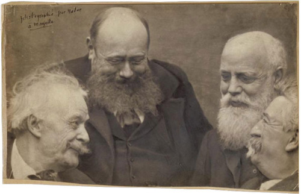
De g. à d.: Nadar, Paul-Armand Silvestre, Mariani, Antoine Lumière (le père d'Auguste et Louis)
Photo de Nadar, Marseille, 1897
Le succès de Mariani ne tint pas tant à son habileté dans le domaine galénique qu'à son génie de la publicité et à son art de lancer, de répandre et de maintenir le nom de son produit parmi le public.
Ayant décidé de devenir pharmacien, il vint à Paris et y fut apprenti d'abord chez Chantrel, rue de Clichy, puis chez Mondet, faubourg Saint-Germain. Ambitieux, il cherchait une spécialité à commercialiser pour faire fortune. Dans ce but, il se concentra sur les préparations de toniques. Le Dr Fauvel, connaissant ses travaux, lui adressa sa première cliente, une chanteuse d'opéra. Mariani lui présenta sa nouvelle formule: elle l'apprécia et lui commanda une caisse de douze bouteilles. L'œuvre de sa vie était lancée!
Vingt ans plus tard, il était le plus grand importateur européen de feuilles de coca et le Vin Mariani était le tonique le plus connu et le plus recherché des deux côtés de l'Atlantique. Ce succès était dû non seulement aux vertus, narcotiques et autres du breuvage, mais aussi et surtout aux talents publicitaires de son inventaire.
Les affiches
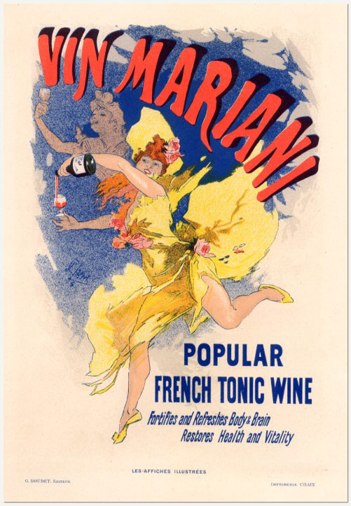
Affiche de Jules Chéret pour l'Angleterre
Les campagnes publicitaires de Mariani apparurent comme une nouveauté pour l'époque. La publicité pour les médicaments se faisait alors normalement au moyen d'affiches sur les murs et d'annonces dans les journaux et revues médicales et populaires. Mariani ne négligea pas ces «media».
Ainsi, il demanda à Jules Chéret, le plus célèbre affichiste de la Belle Epoque, de lui dessiner une affiche. Lorsqu'elle fut réalisée, vers 1894, Mariani exportait son produit depuis au moins dix ans. Aussi une édition en fut-elle faite avec texte en anglais pour le marché d'outre-Manche. Mais le système des témoignages restait son arme principale et il en utilisa les résultats de différentes façons: sous forme de livrets et brochures pour les marchés
français, anglais et américain : sous forme d'annonces individuelles, dans les journaux, avec reproduction d'un ou plusieurs portraits ; sous forme de cartes postales, enfin.
Les cartes postales
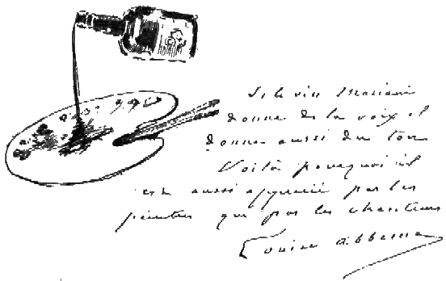
Carte postale avec esquisse de Louise Abbéma '1853-1921)
Ces cartes reproduisent les illustrations fournies par les artistes en réponse à la demande de témoignage de Mariani dont il sera question plus loin. Mariani rémunérait les auteurs comme une sorte de protecteur des arts et c'est là quelque chose de très différent des réponses libres qu'il recevait pour une caisse de vin ou une
série de ses albums. Il est certain qu'il prenait du plaisir à ce rôle de « stimulateur » de jeunes talents. L'écrivain Jean Aicard note que « la bonté de Mariani était proverbiale; en vérité, elle était généreuse et chaude comme l'élixir auquel il devait sa fortune ». Et un jeune artiste bénéficiaire de ses largesses, Jules Grün, plaça Mariani parmi les personnages principaux de la peinture représentant un repas annuel qu'il donnait dans le célèbre restaurant de Paris, Ledoyen ; le tableau fut exposé au Salon de 1911 et est maintenant au Musée de Rouen. Les cartes postales eurent un grand succès. En tout, cinq séries de trente cartes chacune furent éditées. Elles étaient offertes aux
collectionneurs simplement pour un timbre de 10 centimes et furent rapidement épuisées. Aujourd'hui, elles sont plus recherchées que jamais et atteignent à Paris des prix équivalents à celui d'un bon repas dans un restaurant
trois étoiles!
Les annonces dans les journaux
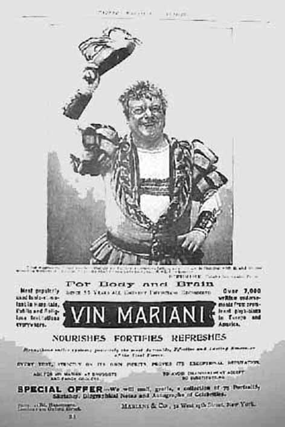
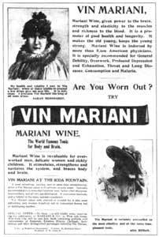
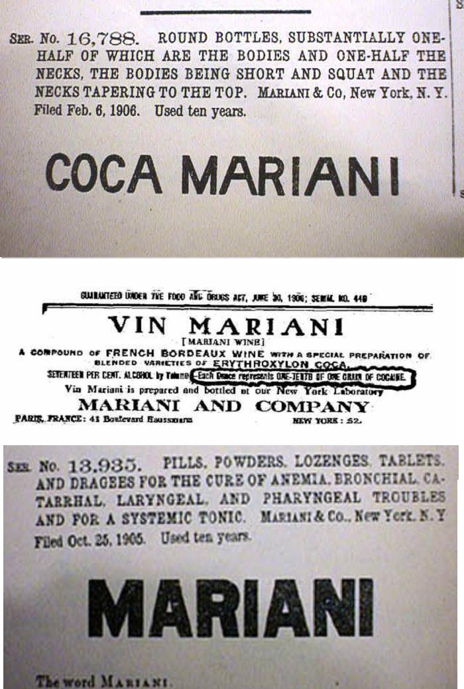
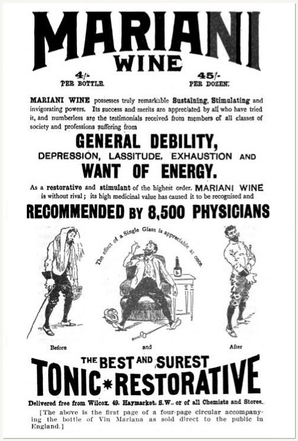
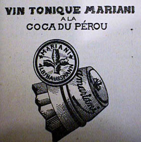
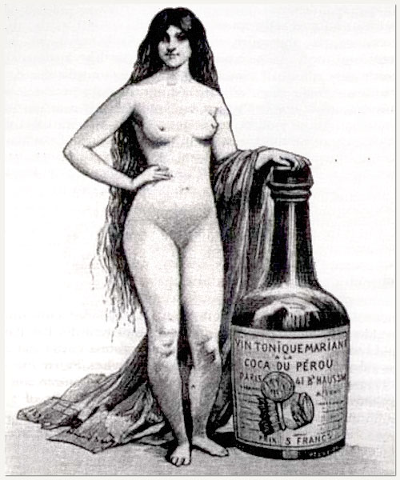
Annonces publiées dans la presse anglaise, américaine et française
Mariani ne négligea pas pour autant les classiques annonces dans les journaux.
Avait-il déjà inventé le message subliminal? La dame en tenue d'Eve qui caresse nonchalamment le goulot de la bouteille de Vin de Coca, se veut sans doute le symbole de l'union harmonieuse entre la pharmacologie et l'art plastique classique. Mais ne suggèrerait-elle pas, sans en avoir l'air, que ce roi des toniques est aussi un aphrodisiaque? C'est en tout cas une vertu que lui reconnaît, en 1877, le Dr Archie Stockwell dans le "New England Journal of Medecine".
Quant à l'"annonce à l'escrimeur", elle utilise astucieusement une caricature-autoportrait reçue du peintre et écrivain Frédéric Régamey (1849-1925), comme contribution à l'album Mariani. Le sport et en particulier, l'escrime, était un des thèmes favoris de cet excellent illustrateur (Cf. la page consacrée aux "figures contemporaines").
Les témoignages
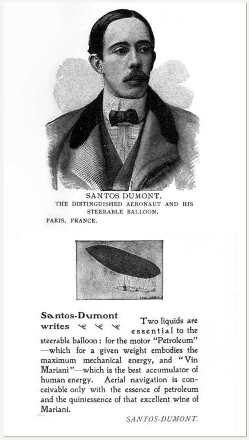
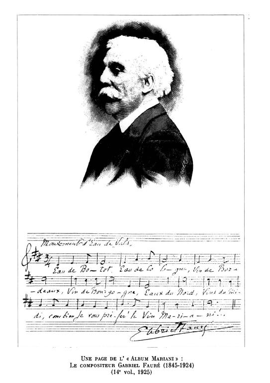
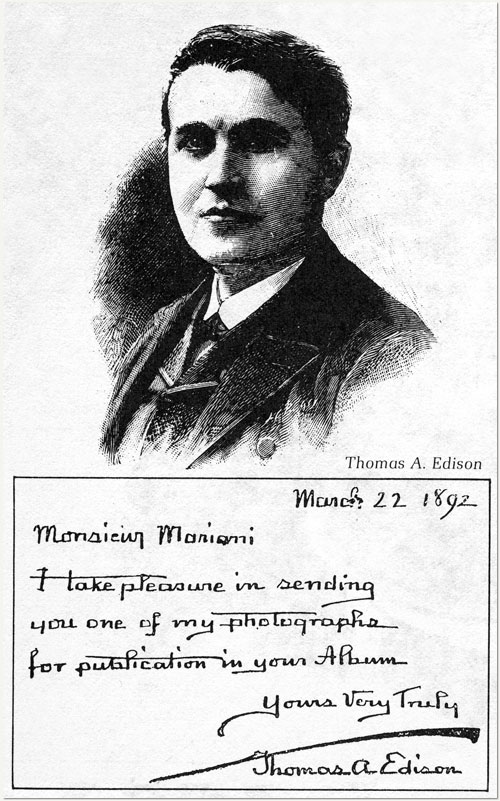
Photos dédicacées envoyées par des stars à Mariani:
Santos-Dumont, Gabriel Fauré et Thomas Edison
Ce dernier ne dormait que quatre heures par jour et était un consommateur assidu de Vin Mariani
Mais l'élément clef de la stratégie de vente de Mariani était le témoignage. Il porta les techniques d'obtention et d'utilisation des témoignages à un degré ignoré de tous ses prédécesseurs en ce domaine, qu'ils soient d'authentiques pharmaciens ou d'authentiques charlatans.
Son procédé consistait à recueillir systématiquement et à publier de même les commentaires laudatifs obtenus des gens les plus importants de la société et de tout l'"establishment": Têtes couronnées, papes, chefs d’état, scientifiques, inventeurs, écrivains, danseurs, tous adoraient le Vin Mariani.
Les témoignages remplissaient 15 volumes reliés de cuir, intitulés la Série des Figures contemporaines.
Trois papes: Léon XIII, Pie X et Benoît XV (Mariani consentait des rabais au clergé et aux orphelinats, en récompense de quoi Léon XII lui décerna une médaille qui figura en bonne place sure les réclames),
seize souverains parmi lesquels les rois, reines et empereurs de Grèce, du Portugal, d’Espagne, de Bulgarie, de Roumanie, du Cambodge, de Perse, de Suède et du Brésil,
Des hommes politiques: Raymond Poincaré, Emile Loubet, Félix Faure, Louise Michel, Jules Simon, le Président des Etats-Unis McKinley, le ministre Maurice Berteaux, le préfet Poubelle, l’ambassadeur de l’empereur de Chine,
Une foule d'artistes, de sculpteurs, de musiciens, de danseurs, d'écrivains, car Mariani se piquait d'être protecteur des arts: Anatole France, Alexandre Dumas, Sarah Bernhardt, Jules Verne, HG Wells, Emile Zola, la danseuse Loïe Fuller, Edmond Rostand, Auguste Rodin, Louis Blériot, Georges Feydeau, Jules Renard, Puvis de Chavanne, Georges Courteline, Octave Mirbeau, Eugene Grasset, Henri Martin, Henrik Ibsen, Charles Gounod, René Bazin, Léon Bloy, Mucha, Odilon Redon, Cécile Sorel,
des inventeurs: Thomas Edison, Auguste et Louis Lumière,
Plus de trois cents médecins éminents, en grande partie français mais aussi étrangers, comme le prix Nobel de Médecine Élie Metchnikoff, Sir Morell McKenzie, Alexis Carrel et William Golden Mortimer, auteur d'une importante "Histoire de la Coca, la plante divine des Incas", qui porte comme dédicace: A Angelo Mariani, interprète reconnu de la 'Plante divine' et le premier à avoir rendu la plante disponible dans le monde" - par bonheur le livre donne une meilleure connaissance des faits que la dédicace pourrait laisser supposer.
Concernant cette corporation qui était une cible de premier ordre pour sa publicité, Mariani assurait, dans une brochure publiée pour le marché américain en 1902, que durant les quatre dernières années, dans toutes les parties du monde civilisé, plus de 8 000 praticiens réputés, qui ont personnellement soumis le Vin Mariani à un test, m'ont écrit, exprimant uniformément leur satisfaction et leurs éloges."
Un exemple entre tant d'autres, celui du Maréchal Pétain, est caractéristique du genre de réponse désirée: "Les Français devaient gagner la guerre, puisqu'ils avaient pour eux le Coca Mariani, le Roi des Pinards!"

Fond sonore: "Chœur de femmes et d'enfants" du Guillaume Tell de Rossini cité par V. Joncières